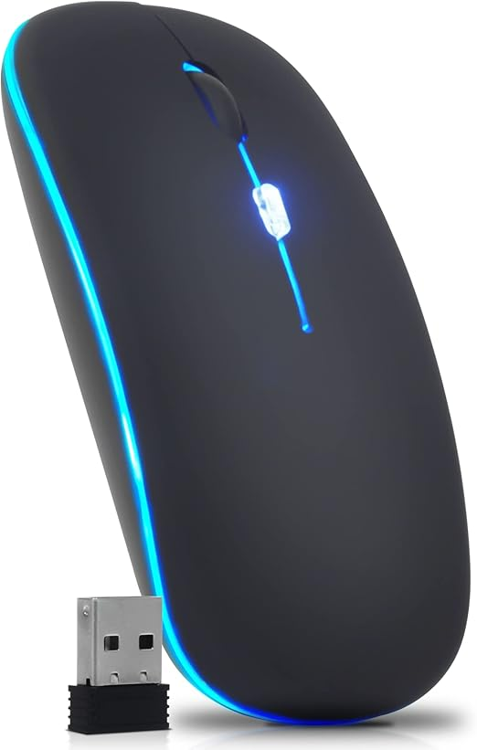
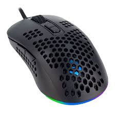
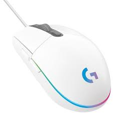

Catálogo de Produtos
| Foto |
Código |
Descrição |
Qtd em estoque |
Valor unitário |
|  |
1 |
Mouse Óptico |
23 |
21,16 |
|  |
2 |
Mouse Gamer |
42 |
134,67 |
|  |
3 |
Mouse Branco |
46 |
210,99 |
Descrição
Características do Produto
- Sensor óptico preciso com 1.600 DPI permite que você trabalhe na maioria das superfícies
- Configuração USB rápida e fácil com cabo de 1,5m
- Design ambidestro, produzido para caber de forma natural e perfeita na palma da sua mão
- Três botões integrados
- Ampla compatibilidade: Windows e Mac
Avaliação do Produto
- Joãozinho06
- Otimo para jogar
- Cleber
- Odiei